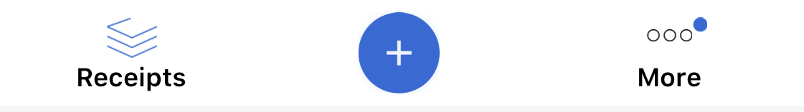

Entry Points Reference
Entry Points Reference
Sensibill Entry Points (UI)
- Receipt Capture
- Receipt Details
- How to Observe Receipt Edit / Delete
- Recent Receipt Export List
- Receipt Search
- Receipt List
Receipt Capture
Note: Please include the required Property List keys, as explained on the linked page to give the Receipt Capture screen access the device’s camera to capture receipts, or access the device’s photo gallery to allow the user select an existing image of a receipt.
The new receipt capture experience provides the following features:
- Automatic and manual Capture Modes
- Regular and Long Receipt capturing modes
- Ability to select an image from Photo gallery
- Ability to turn the Flash on and off
- Blur detection after capturing a receipt.
- Cropping a receipt image.
- Ability to attach user’s device Location data on capturing receipt.
Overview
The SDK uses CaptureFlowCoordinator to provide access to the capture flow. The coordinator instance is created when the capture flow should be instantiated. You must retain the instance while the capture flow is displayed, and the coordinator instance must be discarded once capture is finished.
By default, the coordinator will display the capture workflow, and then proceed to the Expense Type and Receipt Processing screens. However, you can cusomize this behavior and skip one or both of the screens. Additionally, the coordinator allows you to be notified when a receipt is initially submitted and when the receipt is finished processing.
Basic Receipt Capture Flow Steps
- Decide which
UIViewControlleryou would like to present a modal capture flow. This view controller becomes the host of the capture flow. - Add a
CaptureFlowCoordinatorproperty to the selected host view controller. This property will be used to retain an instance of the coordinator while the capture flow is displayed. - Implement the
CaptureFlowCoordinatorDelegateprotocol to receive events upon capture flow completion: thecoordinatorDidFinishCaptureevent will be triggered if a user captures a receipt, and thecoordinatorDidCancelCaptureevent will be triggered if the user cancels the flow. Most commonly your host view controller will be the one implementing this delegate. Note: Make sure to set your coordinator instance tonilwhen either event is received to clear the flow from memory. - Create an instance of
CaptureFlowCoordinatorby passing your host view controller as an argument. - Make sure you set a delegate for the
CaptureFlowCoordinatorDelegateprotocol. - Call the
start()function of the coordinator instance to start the receipt capture flow over the host view controller in full screen presentation mode.
The following example demonstrates a basic Receipt Capture flow integration. This integration assumes that the Expense Type and Receipt Processing screen will be shown to a user after capture completes:
import SensibillUI
class ViewController: UIViewController {
// MARK: - Private Properties
private var captureFlowCoordinator: CaptureFlowCoordinator?
// MARK: - Private Methods
private func startReceiptCaptureFlow() {
let coordinator = CaptureFlowCoordinator(host: self)
coordinator.delegate = self
coordinator.start()
self.captureFlowCoordinator = coordinator
}
}
// MARK: - CaptureFlowCoordinatorDelegate
extension ViewController: CaptureFlowCoordinatorDelegate {
public func coordinatorDidFinishCapture(_ coordinator: CaptureFlowCoordinator) {
self.captureFlowCoordinator = nil
}
public func coordinatorDidCancelCapture(_ coordinator: CaptureFlowCoordinator) {
self.captureFlowCoordinator = nil
}
}
coordinatorDidCancelCaptureevent is triggered when the user cancels the onboarding flow for the first time or if user explicitly taps on the cancel button on the capture screen.coordinatorDidFinishCaptureevent is triggered in the following use cases:- When
exitAfterCaptureistruean event will be triggered once a receipt is captured and aTransactionis submitted to receipt engine for processing. - When
exitAfterCaptureisfalsean event will be triggered when the user selectsView Lateron the receipt processing screen. - When
exitAfterCaptureisfalsean event will be triggered when the user waits for the receipt to be processed on the receipt processing screen, selects theView Receiptoption once the receipt is processed, and then selects theDonebutton on the receipt validation screen.
- When
Refer to the CaptureFlowCoordinatorDelegate reference documentation to learn more about additional optional events that would trigger:
- when a
Transactionis submitted to the receipt engine for processing. - when a
Receiptis successfully generated while the user waits on the receipt processing screen.
How to Customize the Receipt Capture Flow
Use SBSDKConfiguration.sharedInstance()?.captureViewConfiguration to enable and disable features and to customize the appearance of the Capture Flow. Please refer to the SBCaptureViewConfiguration documentation for a full list of configurable feature flags and appearance attributes.
Example:
import SensibillUI
class ViewController: UIViewController {
// MARK: - Private Methods
private func startReceiptCaptureFlow() {
// Disable crop functionality
SBSDKConfiguration.sharedInstance()?.captureViewConfiguration.isCropEnabled = false
// Set auto-capture detection rectangle border line width
SBSDKConfiguration.sharedInstance()?.captureViewConfiguration.detectionlineWidth = 2.0
// Update auto-capture processing circle edge stroke color
SBSDKConfiguration.sharedInstance()?.captureViewConfiguration.captureCircleStrokeColor = UIColor.red
// create instance of coordinator
let coordinator = CaptureFlowCoordinator(host: self)
...
}
}
Hide Receipt Expense Type Selection Screen.
The receipt expense type selection screen appears after a receipt is captured and submitted to the receipt engine for processing in the basic capture flow.
If this feature is disabled on backend then no action is needed.
Otherwise, set the following flag to false before starting the capture flow to stop the receipt expense type selection screen from appearing.
SBSDKConfiguration.sharedInstance().searchFilterConfiguration.expenseTypeFilterEnabled = false
Basic Receipt Capture with Expense Type
You can provide a specific ReceiptExpenseType - Business or Personal - using the start(expenseType:) method of the coordinator to automatically associate a receipt with that expense type. When a valid expense type is provided the expense type screen won’t be shown after a capture and the user will be taken directly to the receipt processing screen.
import SensibillUI
class ViewController: UIViewController {
...
private func startReceiptCaptureFlow(expenseType: ReceiptExpenseType) {
...
coordinator.start(expenseType: expenseType)
...
}
}
...
Skipping Receipt Processing Screen
Use the coordinator.exitAfterCapture flag to control what happens after a user captures a receipt. By default the flag is set to false, and after capturing the flow continues to the Receipt Processing screen.
If you don’t want to show the Receipt Processing screen to a user, set coordinator.exitAfterCapture to true before starting the flow. This value will tell the coordinator to exit immediately after a user finishes a capturing receipt.
import SensibillUI
class ViewController: UIViewController {
...
private func startReceiptCaptureFlow() {
...
coordinator.exitAfterCapture = true
...
coordinator.start()
}
}
...
Receipt Processing Monitoring
After the receipt is captured by a user, the coordinator passes a Transaction oject with receipt image to the TransactionHandler for processing. The transaction handler will submit a receipt to the server and will store the resulting SBReceipt object in the local cache.
The coordinator provides two optional methods via the CaptureFlowCoordinatorDelegate when the following receipt processing events occur:
- A receipt
Transactionwas submitted for processing to the server. Implement the following optional delegate method of theCaptureFlowCoordinatorDelegateprotocol:
func coordinator(_ coordinator: CaptureFlowCoordinator, didSubmitTransaction transaction: SBLTransaction)
- The resulting
SBReceiptis available in the user’s cache. Implement following optional delegate method ofCaptureFlowCoordinatorDelegateprotocol:
func coordinator(_ coordinator: CaptureFlowCoordinator, didProcessReceipt receipt: SBReceipt)
Note: The didProcessReceipt event will only be triggered if a user waits on the Receipt Processing screen, and a receipt is successfully created from a submitted Transaction. If you would like to receive a notification in any case, or want to be notified on additional Transaction status changes, please register a transaction observer with SBDataEvent as described in the Monitoring Receipt Uploading Status section.
Capturing Receipt for Bank Account Transaction
Receipt Capture can also be used to link an external bank account transaction to a receipt, using the coordinator’s coordinator.start(transaction:) method. See Transaction Linking for details.
Receipt Details
To display the details of a receipt, instantiate SensibillReceiptViewController by passing a valid receiptId.
import SensibillUI
class ViewController: UIViewController {
func pushReceiptDetail(receiptId: String) {
guard let viewController = SensibillReceiptViewController(receiptId: receiptId) else {
print("Unable to instantiate SensibillReceiptViewController.")
return
}
navigationController.pushViewController(viewController, animated: true)
}
}
How to Observe Receipt Edit / Delete
Subscribe as a receipt observer via the SBDataEvent shared manager in order to observe the editing or deletion of an existing receipt.
import SensibillUI
class ViewController: UIViewController {
func addReceiptObserver() {
SBDataEvent.sharedManager()?.addReceiptObserver(self) { (type, receipt) in
guard let receipt = receipt,
let receiptId = receipt.id else {
return
}
switch type {
case .deletion:
print("Receipt with id \(receiptId) edited")
case .edit:
print("Receipt with id \(receiptId) deleted")
@unknown default:
// SDK introduced a new status, please review Migration Guide.
break
}
}
}
}
Recent Receipt Export List
Create an instance of RecentExportsViewController using the recommended instantiate method in order to a show list of the recent receipt exports that the user has requested.
import SensibillUI
class ViewController: UIViewController {
func presentRecentExport() {
guard let controller = RecentExportsViewController.instantiate() else {
print("Unable to instantiate RecentExportsViewController")
return
}
present(controller, animated: true, completion: nil)
}
}
Receipt Search
The SBSearchReceiptsController instance provides a convenient method to push the Receipt Search Controller to the current Navigation Controller.
This method also provides an option to disable or enable a search filters feature in the Search UI by passing true (to show filters) or false (to hide filters) to the property andAllowFiltering.
import SensibillUI
class ViewController: UIViewController {
func pushSearchReceipts(allowFiltering canFilter: Bool) {
SBSearchReceiptsController.push(from: self, andAllowFiltering: canFilter)
}
}
Receipt List
Create an instance of ReceiptListViewController which is a UINavigationController to present a list of receipts. This screen provides the following options:
import SensibillUI
class ViewController: UIViewController {
func presentReceiptList() {
let controller = ReceiptListViewController()
present(controller, animated: true, completion: nil)
}
}
Default Bottom View on Receipt List
- By default, the Receipt List screen contains a default bottom bar. The default bar has a Receipts tab, a Capture Button in the form of a rounded Plus Icon, and a More button. The more button provides direct access to some additional screens (Recent Exports and Create Email Receipt) if those features are enabled.

Customize the Bottom View and Left UIBarButtonItem of the Navigation Controller on Receipt List
In order to override the default bottom bar with your own custom UIView instance and to customize the left UIBarButtonItem, you must provide an instance of a class conforming to the SBLReceiptListViewControllerDataSource protocol while configuring your ReceiptListViewController.
Note: One caveat of overriding the bottom bar, is that you will always have the responsibility of presenting the Receipt Exports screen, as it will no longer be accessible via the deafult More menu.
import SensibillUI
class ViewController: UIViewController {
var receiptListViewController: ReceiptListViewController?
...
func presentReceiptList() {
receiptListViewController = ReceiptListViewController(dataSource: self)
present(controller, animated: true, completion: nil)
}
@objc func didRequestDismissReceiptList() {
receiptListViewController.dismiss(animated: true, completion: nil)
}
}
// MARK: - SBLReceiptListViewControllerDataSource
extension ViewController: SBLReceiptListViewControllerDataSource {
func leftBarButtonItem(in viewController: UIViewController) -> UIBarButtonItem? {
return UIBarButtonItem(barButtonSystemItem: .cancel, target: self, action: #selector(didRequestDismissReceiptList))
}
func bottomViewHeight(in viewController: UIViewController) -> CGFloat {
// return height for bottom view.
}
func bottomView(in viewController: UIViewController) -> UIView {
// return instance of UIView act as bottom view.
}
}